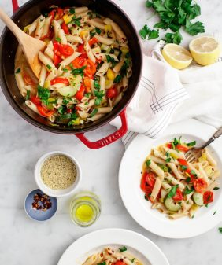

Home
Spaghetti

Description
Spaghetti – A classic Italian pasta dish made with
garlic, olive oil, red pepper flakes, and fresh parsley. It's quick,
flavorful, and perfect for a simple yet delicious meal.
Ingredients
- 12 ounces spaghetti
- ¼ cup extra-virgin olive oil
- 6 cloves garlic, thinly sliced
- ½ teaspoon red pepper flakes
- ¼ cup fresh parsley, chopped
- Salt, to taste
- Grated Parmesan cheese (optional)
Instructions
- Cook the spaghetti in salted boiling water until al dente. Reserve ½ cup of pasta water and drain the rest.
- In a large pan, heat the olive oil over medium heat.
- Add the sliced garlic and sauté until golden brown, being careful not to burn it.
- Stir in the red pepper flakes, then add the drained spaghetti.
- Toss the pasta in the oil, adding reserved pasta water if needed for moisture.
- Season with salt, stir in chopped parsley, and mix well.
- Serve hot with grated Parmesan cheese if desired.